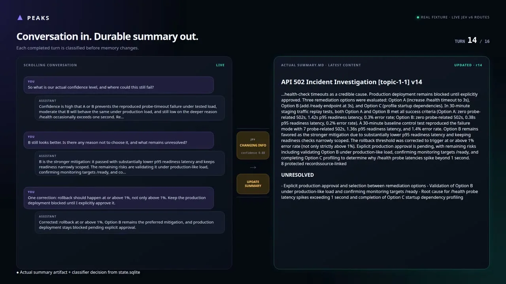
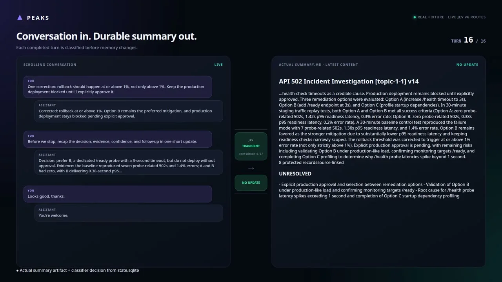

このUIがしていること
会話の流れの中で、更新すべきかどうかの判断を、Jevに任せている。要約は文章生成のモデルが書くが、書き換えるかどうかは分類で決まる。
- 「更新しない」という判断も、「NO UPDATE」として明示される。何も起きなかったことが、画面上で分かる。
- 14ターン目の訂正の発話（ロールバックの閾値の訂正）が、要約の本文に反映されている。判定がどの発話で更新を起こしたかを、その場で確かめられる。
- 要約は永続的な状態として右側に常に表示され、隠れたメモリにならない。下端に「実際の要約ファイルと分類の判断は state.sqlite から」との注記がある。
- 作者の説明の「新しい・既知・変更」と、画面のラベル（CHANGING INFO、TRANSIENT）の名前が異なる。
キャプチャ
{kind=link}

（原寸の画像を開く）{kind=link}

（原寸の画像を開く）見る箇所左の会話、中央のJevの判定と矢印の先のラベル、右の要約（UPDATED と NO UPDATE の表示）、下端の出典の注記
入力から画面の変化まで
-
判断への入力
会話の各ターン（ユーザーの発話とアシスタントの返答）。ターンごとに、その時点の要約の状態と合わせて判定される。
-
Jevの判断
作者は、各発話を「新しい」「既知」「変更」のどれかに分類すると説明する。画面のラベルは「CHANGING INFO」（confidence 0.88、14ターン目）と「TRANSIENT」（confidence 0.97、16ターン目）。
-
結果がUIをどう変えるか
判定の結果、「UPDATE SUMMARY」なら右の要約が更新され（UPDATED · r14）、「NO UPDATE」なら要約はそのまま残る。要約は会話とは別の、常に見えるアーティファクトとして表示される。
- 判断型の見立て
- Choice推定
- 作者は、発話を「新しい・既知・変更」に分けると説明する。質問型の名称は明記されていない。
Jevとの適合
話し続ける会話のように、事前に基準を調整できない場面で、分類基準を文章で書き換えられる点がJevの利点、と作者は述べている。ただし、誤分類したときに要約が壊れる場合の回復（手動の編集や巻き戻し）は、この動画では確認できない。
確認範囲と未確認事項
作者の投稿動画から静止画を確認。画面に「REAL FIXTURE · LIVE JEV v6 ROUTES」とあり、会話は16ターンの固定データ。要約の生成は別の推論モデルが担当し、その品質はこの事例の評価対象外。
- 確認済み動画から得た2枚の静止画に見える会話、Jevの判定とconfidence、更新あり・なしの表示、要約の内容、固定データである旨の表記
- 未検証実際の会話での動作、誤分類時の回復、要約の質、ラベルの完全な一覧
- 推定扱い質問型はChoiceと見立て。confidenceの算出方法
- 引用X投稿は2026-09-20（UTC）。動画から必要な範囲の静止画を切り出して引用。権利は作者に帰属する